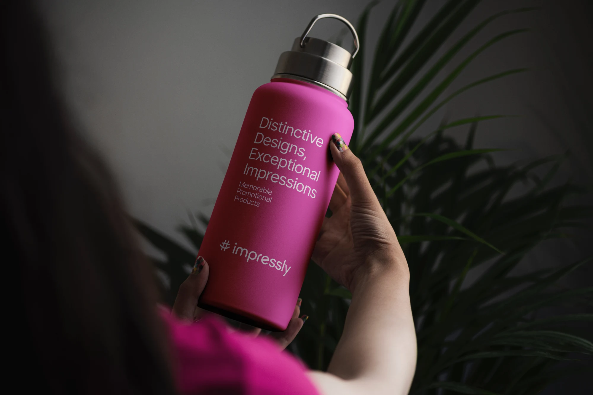
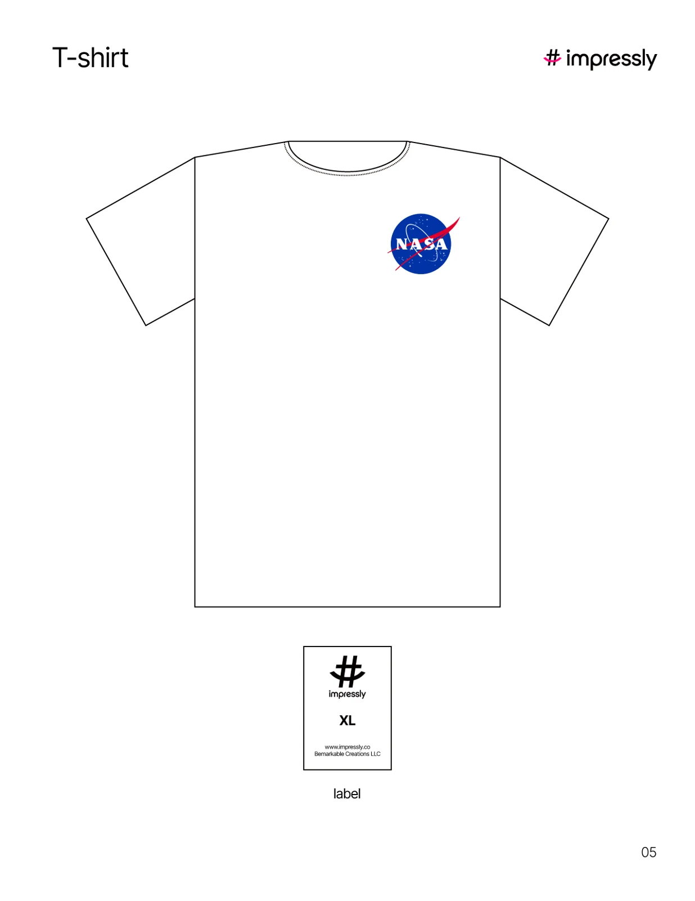
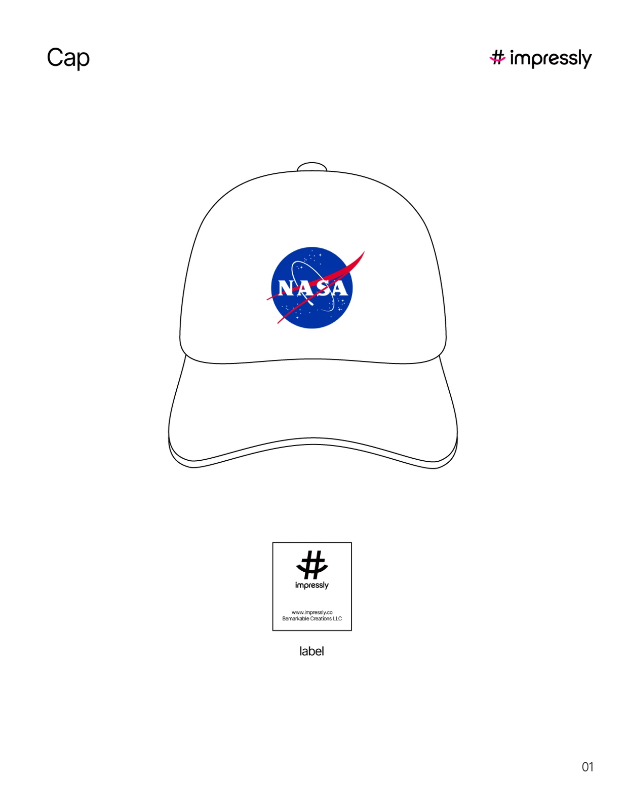
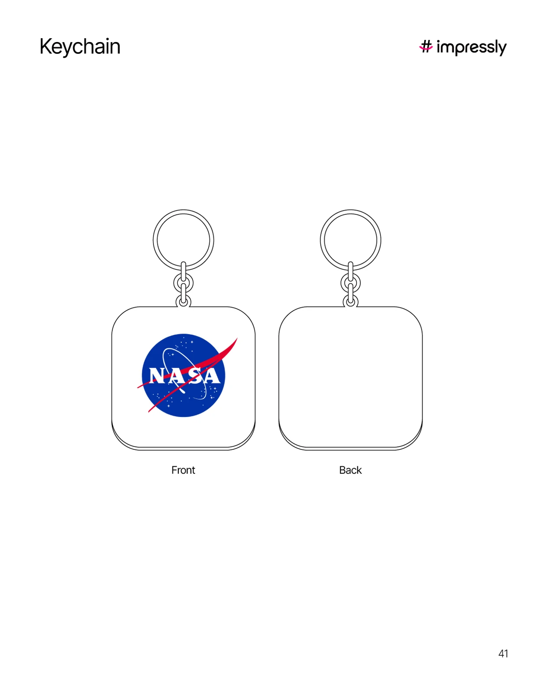

Distinctive Designs,
Exceptional Impressions
Impressly 围绕具有辨识度的设计，将品牌表达带入可以触摸、使用和携带的日常物件。让一次相遇留下印象，也让这份印象随着使用不断延续。
以独特设计，让日常物件留下不凡印象。

Impressly 围绕具有辨识度的设计，将品牌表达带入可以触摸、使用和携带的日常物件。让一次相遇留下印象，也让这份印象随着使用不断延续。
以杯具、服饰和随身小物为载体，探索图形、色彩与文字如何成为产品体验的一部分。设计既要让人一眼记住，也要融入日常使用。

现有设计资料包含服饰、帽款、钥匙扣与织章等方向。下列为概念设计稿，展示同一视觉主题在不同物件上的延展。

